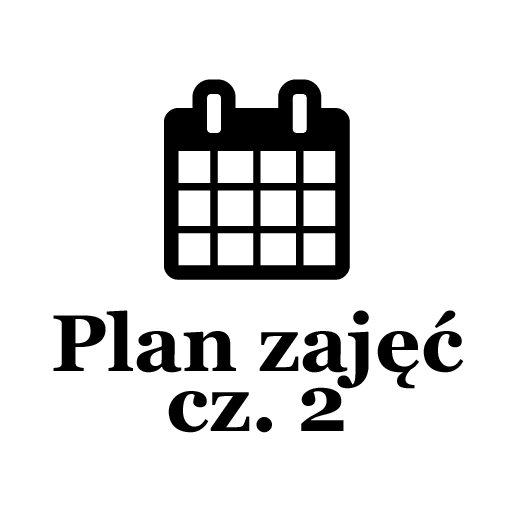
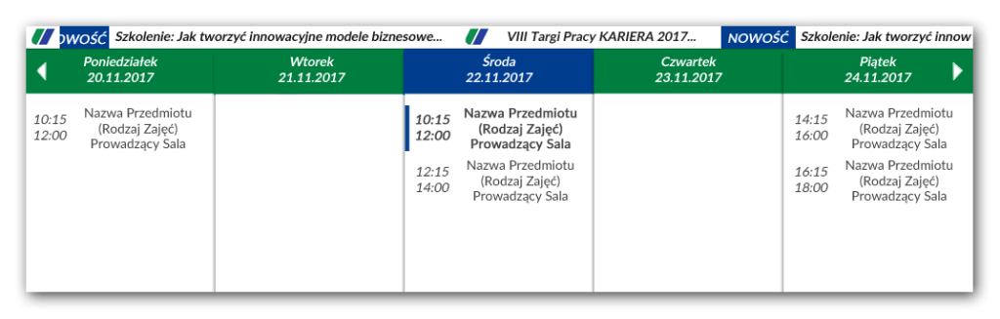
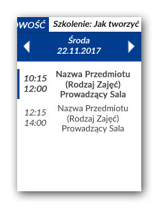
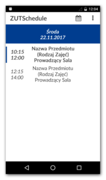

Post archive
Plan zajęć cz. 2 - Projekt GUI

W tym tygodniu skupiłem się głównie na projektowaniu interfejsu użytkownika. Wszystkie funkcjonalności muszą być widoczne i dostępne w prosty sposób. Jak w poprzednim projekcie, jako czcionkę główną wykorzystam Lato, dodatkowo będę posilał się ikonami z Font Awesome. Kolory bazowe wykorzystam z logo uczelni. Więcej informacji o wykorzystywanych przeze mnie zasobach można zobaczyć tutaj.
Projekt aplikacji desktopowej
Zgodnie z wymogami aplikacja desktopowa powinna posiadać tryby umożliwiające wyświetlanie tylko jednego dnia lub też cały tydzień. Spędziłem trochę czasu w Photoshopie i zrobiłem następujący szkic.{kind=link}

Starałem się utrzymać czysty, a zarazem nowoczesny wygląd. Na górze można zauważyć pasek z informacjami, który będzie przesuwał się w lewo. Aktualny dzień jest oznaczony innym kolorem, jak i zajęcia, które właśnie się odbywają. Tak samo, jak zajęcia odwołane lub też egzaminy. Wygląd jednodniowy będzie po prostu wyświetlonym jednym dniem z całego tygodnia. Dodatkowo pasek z informacjami został zminimalizowany, aby można było zobaczyć więcej tekstu.{kind=link}

Projekt aplikacji mobilnej
Aplikacja mobilna wyglądać będzie identycznie jak aplikacja desktopowa w trybie 1-dniowym. Dodatkowo ze względu na możliwość zostanie dodane menu, z którego będzie można wejść do ustawień bądź kalendarza pozwalającego wybrać konkretny dzień tygodnia.{kind=link}
